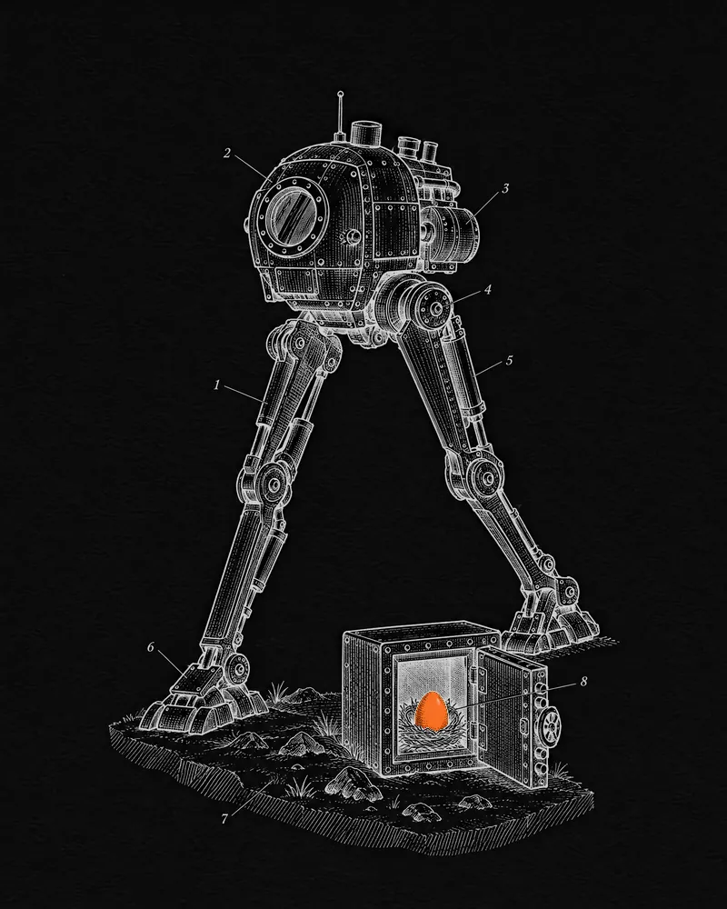

Walker Labs · 2023 — 2025
Area 6545
Taking the gas out of a game community: one hub where Walker World holders stake, earn and spend OOZE without paying a fee — and mint the next collection with it.
- Role
- Head of Engineering (Web3)
- When
- September 2023 — February 2025
- Chain
- Ethereum · an off-chain OOZE ledger
- Built with
- Solidity · ERC-721 · ECDSA mint passes · soft staking · off-chain economies · React · wagmi

Context
Walker Labs is a Stockholm studio founded in 2021 by developers from EA, DICE, Ubisoft and Rovio. In November 2022 it announced Walker World, an Unreal Engine 5 open-world shooter, backed by a $2M token seed round led by Merit Circle and Citizen X. Its universe lives on Ethereum: 6,545 Genesis Walkers, then Women, Weapons and Jetpacks — and OOZE, the off-chain currency holders earn by staking them.
Walker World announced me as its Web3 Head of Engineering in September 2023.
The challenge
Holders already earned OOZE by staking, but every stake, unstake and reward claim was an Ethereum transaction — they were paying gas just to take part. The brief: keep the NFTs in holders’ wallets, take gas out of everyday participation, carry every existing OOZE balance across without losing a point, and put staking, a store, customisation and a staker-only mint for the next collection into one hub.
What I did
- Recruited and led the team building Walker World’s Web3 platform across its Ethereum collections.
- Shipped Area 6545 about ten weeks after joining: staking moved off-chain — NFTs stay in the wallet, no gas to stake, unstake or claim — replacing an on-chain staking contract, with every OOZE balance carried over.
- Launched the Lost Walkers in December 2023: a staker-only collection minted with 500,000 OOZE through single-use, server-signed mint passes that the contract verifies and never accepts twice.
- Kept the collections useful after the studio refocused from the Walker World game to OPEN, a battle royale with Readyverse, in April 2024 — missions, daily OOZE streaks, a 3D viewer, one-click downloads and partner staking, starting with FLUF World EGGs.
How it works
- 01ConnectHolders connect a wallet and pick a username — nothing is transferred, no gas is paid.
- 02DiscoverThe hub reads every Walker the wallet holds, with a 3D viewer, downloads and renaming that shows on OpenSea.
- 03StakeOne click stakes everything; each asset accrues OOZE every 24 hours while it stays in the wallet.
- 04EarnClaims, daily streaks, missions and community events all credit the same off-chain ledger.
- 05SpendOOZE buys store items gas-free, or a signed mint pass redeemed on-chain for a Lost Walker.
OOZE, spent on-chain
Outcome
- ~10 wksfrom joining to Area 6545 going live
- 0 gasto stake, unstake or claim — every one was a transaction before
- 1,444Lost Walkers minted by February 2025
- 500KOOZE for each staker’s mint pass
- 13,924Walkers in circulation by June 2024
- 5 + EGGsWalker collections, plus FLUF World EGGs, stakeable
The Walker World game itself was never released — in April 2024 the studio refocused on OPEN — so Area 6545 became the community’s home. It is still live today.
“He has executed some of the most flawless mints ever done in digital collectibles, including his contribution to the @Flufworld ecosystem!”
Sources
- Walker World welcomes its new Web3 Head of EngineeringWalker World · X · Sep 2023 ↗
- Area 6545 — patch notes: “staking is now fully gasless”Walker World · Nov 2023 ↗
- The Lost Walkers collection: 500,000 OOZE, stakers onlyWalker World · Dec 2023 ↗
- LostWalkers contract: signed claims, replay protectionEtherscan ↗
- Area 6545, liveWalker Labs ↗
- All you need to know: Walker World and partnersWalker World · Apr 2024 ↗
- Area 6545 walkthrough: missions, streaks, 3D viewer, storeWalker World · X · Dec 2024 ↗
- Walker Labs unveils Walker WorldPRWeb · Nov 2022 ↗
- Ready Player One creator debuts OPENTechCrunch · Mar 2024 ↗